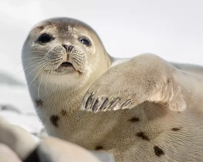

2.png)
О национальном парке
«Онежское Поморье» — единственная в европейской части России заповедная территория, сочетающая морскую и таежную природу. Национальный парк занимает в основном прибрежную часть Онежского полуострова Белого моря.
Онежский полуостров омывается водами Белого моря. Это внутреннее море Северного Ледовитого океана и одно из самых маленьких морей России.
В водах Онежского полуострова встречаются кольчатая нерпа, морской заяц и морская свинья, а также белухи. По одной из версий, именно этот белый кит дал название Белому морю.
Животный мир Белого моря
.webp)
Белуха
Самый крупный зверь в Белом море. Достигает 4 метров в длину и 1 тонны веса. Кожа этого кита снежно-белого цвета. В Белом море он появляется с мая и откармливается до ноября. Мыс Глубокий на Онежском полуострове — одно из мест, куда белухи приходят вывести потомство. Белух иногда называют морскими канарейками.
.webp)
Кольчатая нерпа
Кольчатая нерпа обычно кажется малоподвижной: летом она греется на камнях, осенью подолгу спит на берегу. Однако в среднем она преодолевает 10 км в сутки. Исследования показали, что молодая нерпа за 40 суток обошла несколько заливов, преодолевая в сутки около 43 км.

Гренландский тюлень
Самые милые обитатели Белого моря — детёныши гренландских тюленей (бельки). Они рождаются в марте, последовательно линяют, превращаясь в хохлушу и серку, и всё это время не опускаются в воду, чтобы не утонуть.

Морской заяц, лахтак
Самый крупный беломорский тюлень — лахтак (морской заяц), достигающий 2,5 м в длину и 300 кг веса. Он известен брачными песнями: самец под водой исполняет минутную «арию», которая человеческому уху кажется продолжительным свистом.
Белое море — дом для удивительных созданий. Здесь обитают и привычная треска, и прозрачные морские ангелы, парящие в толще воды, и грациозные гренландские тюлени, и даже крошечные гидроиды. Однако сегодня эту экосистему всё больше затрагивает проблема мусора, который приносят течения, реки и ветер с берегов. Пластик, забытые сети и отходы накапливаются в воде, меняя привычную среду обитания морских жителей.
Где находим мусор
Мусор в море никуда не девается — он лишь перемещается из одного места в другое. В зависимости от этого выделяют три основных типа морского мусора. Давайте их рассмотрим.


Что попадает в море
Пластиковая бутылка
Разлагается более 400 лет, распадаясь на микропластик. Попадая в море, она выделяет токсичные вещества. Морские обитатели часто проглатывают эти частицы пластика, принимая их за планктон.
Жестяная банка
Разлагается в морской воде до 90 лет. Острые края банок ранят ластоногих и птиц, а токсичные вещества от коррозии металла отравляют воду.
Рыболовные сети
Одна из самых опасных форм мусора. Потерянная сеть продолжает безжалостно ловить рыбу, тюленей и птиц годами, превращаясь в ловушку, из которой немногие способны выбраться.
Резиновые тапочки
Разлагается в море до 80 лет, распадаясь на микропластик. Животные принимают кусочки резины за еду и заглатывают их, а вредные вещества из материала попадают в воду и в организм морских обитателей.
Масштабы загрязнения
Мусор в море влияет на выживание рыб, птиц и млекопитающих. Животные слабеют, чаще болеют, их численность сокращается. Страдают пищевые цепочки, снижается разнообразие — экосистемы становятся слабее и хуже справляются с изменениями.
пластикового мусора попадает с суши в морскую среду ежегодно
из общего количества это пластиковые отходы
пластика выносит в море с рек Северная Двина и Онега
Чистое море начинается на берегу
Не оставляй мусор у воды
Даже маленький фантик может укатить в море. Выбрасывай отходы в контейнер или забирай с собой.
Участвуй в уборках берега
Субботники — самый эффективный способ убрать уже накопившийся мусор. Присоединяйся к акциям.
Сортируй отходы
Пластик, стекло, металл и бумага могут получить вторую жизнь. Сдавай их в раздельный сбор — так меньше мусора окажется в природе.
Откажись от одноразового пластика
Одноразовые бутылки, пакеты и стаканы — основной источник загрязнения. Используй многоразовую бутылку, свою сумку и термокружку.
Расскажи другим
Экологические привычки работают лучше, когда их разделяют близкие. Делитесь опытом с друзьями и семьёй — это умножает результат.
.png)